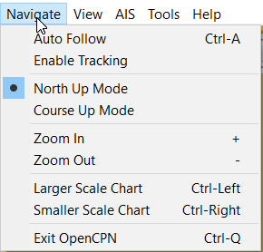

Auto Follow Display Orientation - North up Ship Track - Enable Tracking Display Orientation - North up Display Orientation - Course up Zoom In Zoom Out Scaling Charts - Larger Scale Scaling Charts - Smaller Scale Exit OpenCPN Shortcut Ctrl+Q